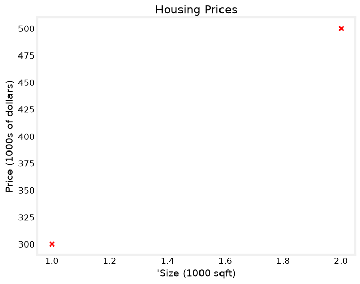
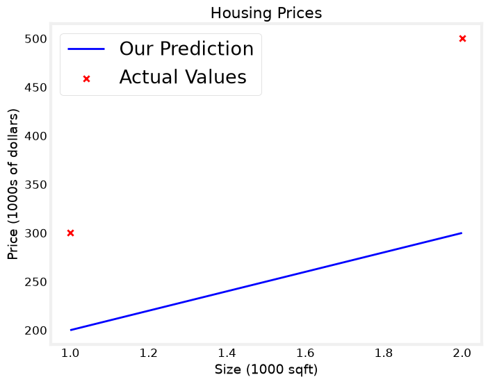
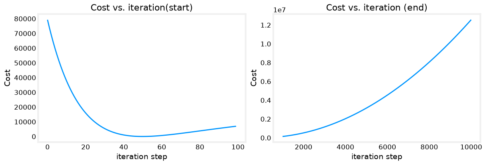

Notation#
Here is a summary of some of the notation you will encounter.
General |
Description |
Python (if applicable) |
|---|---|---|
\(a\) |
scalar, non bold |
|
\(\mathbf{a}\) |
vector, bold |
|
Regression |
||
\(\mathbf{x}\) |
Training Example feature values (in this lab - Size (1000 sqft)) |
|
\(\mathbf{y}\) |
Training Example targets (in this lab Price (1000s of dollars)) |
|
\(x^{(i)}\), \(y^{(i)}\) |
\(i_{th}\)Training Example |
|
m |
Number of training examples |
|
\(w\) |
parameter: weight |
|
\(b\) |
parameter: bias |
|
\(f_{w,b}(x^{(i)})\) |
The result of the model evaluation at \(x^{(i)}\) parameterized by \(w,b\): \(f_{w,b}(x^{(i)}) = wx^{(i)}+b\) |
|
import numpy as np
import matplotlib.pyplot as plt
plt.style.use('/Users/cheerupdimbo/Documents/ds-sprint-july/ds-sprint-july/week3_ml_core/deeplearning.mplstyle')
# x_train is the input variable
x_train = np.array([1.0, 2.0])
# y_train is the target
y_train = np.array([300.0, 500.0])
# m is the number of training example
## using .shape
m = x_train.shape[0]
## using len()
m = len(x_train)
print(f"Number of training examples is {m}")
Number of training examples is 2
# scatter plot where x_train is the input variable and y_train is the target,
# marker is 'x' and color is red
plt.scatter(x_train, y_train, marker='x', c='r')
plt.title("Housing Prices")
plt.xlabel("'Size (1000 sqft)")
plt.ylabel("Price (1000s of dollars)")
plt.show()

w = 100
b = 100
def compute_model_output(x,w,b):
m = x.shape[0]
f_wb = np.zeros(m)
for i in range(m):
f_wb[i] = w * x[i] + b
return f_wb
temp_f_wb = compute_model_output(x_train, w, b)
plt.plot(x_train, temp_f_wb, c='b', label = 'Our Prediction')
print(f"f_wb: {temp_f_wb}")
plt.scatter(x_train, y_train, marker='x', c='r', label = 'Actual Values')
plt.title("Housing Prices")
plt.xlabel("Size (1000 sqft)")
plt.ylabel("Price (1000s of dollars)")
plt.legend()
plt.show()
f_wb: [200. 300.]

In linear regression, you utilize input training data to fit the parameters \(w\),\(b\) by minimizing a measure of the error between our predictions \(f_{w,b}(x^{(i)})\) and the actual data \(y^{(i)}\). The measure is called the \(cost\), \(J(w,b)\). In training you measure the cost over all of our training samples \(x^{(i)},y^{(i)}\)
def compute_cost(x, y, w, b):
m = x.shape[0]
cost = 0
for i in range(m):
f_wb_i = w * x[i] + b
cost += (f_wb_i - y[i]) ** 2
total_cost = cost / (2 * m)
return total_cost
import math, copy
The gradient is defined as: $\( \begin{align*} \frac{\partial J(w,b)}{\partial w} &= \frac{1}{m} \sum\limits_{i = 0}^{m-1} (f_{w,b}(x^{(i)}) - y^{(i)})x^{(i)} \\ \frac{\partial J(w,b)}{\partial b} &= \frac{1}{m} \sum\limits_{i = 0}^{m-1} (f_{w,b}(x^{(i)}) - y^{(i)}) \end{align*} \)$ (4)(5)
Here simultaniously means that you calculate the partial derivatives for all the parameters before updating any of the parameters.
compute_gradient#
compute_gradient implements (4) and (5) above and returns \(\frac{\partial J(w,b)}{\partial w}\),\(\frac{\partial J(w,b)}{\partial b}\). The embedded comments describe the operations.
def compute_gradient(x, y, w, b):
m = x.shape[0] # m = number of training examples
dj_dw = 0 # will accumulate sum_i (f_wb - y_i) * x_i
dj_db = 0 # will accumulate sum_i (f_wb - y_i)
for i in range(m):
f_wb = w * x[i] + b # f_wb = model prediction, f_{w,b}(x^(i)) = w*x^(i) + b
dj_dw_i = (f_wb - y[i] * x[i]) # <- check this line against the formula above.
# is this computing (f_wb - y_i) * x_i,
# or f_wb - (y_i * x_i)? does that match dJ/dw?
dj_db_i = f_wb - y[i] # error term: (f_wb - y_i), matches dJ/db summand exactly
dj_db += dj_db_i # accumulate sum_i (f_wb - y_i)
dj_dw += dj_dw_i # accumulate sum_i (...)
dj_dw = dj_dw / m # divide by m -> average -> completes dJ/dw
dj_db = dj_db / m # divide by m -> average -> completes dJ/db
return dj_dw, dj_db
Implement Gradient Descent#
You will implement gradient descent algorithm for one feature. You will need three functions.
compute_gradientimplementing equation (4) and (5) abovecompute_costimplementing equation (2) above (code from previous lab)gradient_descent, utilizing compute_gradient and compute_cost
Gradient Descent#
Now that gradients can be computed, gradient descent, described in equation (3) above can be implemented below in gradient_descent. The details of the implementation are described in the comments. Below, you will utilize this function to find optimal values of \(w\) and \(b\) on the training data.
In lecture, gradient descent was described as:
where, parameters \(w\), \(b\) are updated simultaneously.
def gradient_descent(x, y, w_in, b_in, alpha, num_iters, cost_function, gradient_function):
"""
Performs gradient descent to fit w,b. Updates w,b by taking
num_iters gradient steps with learning rate alpha
Args:
x (ndarray (m,)) : Data, m examples
y (ndarray (m,)) : target values
w_in,b_in (scalar): initial values of model parameters
alpha (float): Learning rate
num_iters (int): number of iterations to run gradient descent
cost_function: function to call to produce cost
gradient_function: function to call to produce gradient
Returns:
w (scalar): Updated value of parameter after running gradient descent
b (scalar): Updated value of parameter after running gradient descent
J_history (List): History of cost values
p_history (list): History of parameters [w,b]
"""
# An array to store cost J and w's at each iteration primarily for graphing later
J_history = []
p_history = []
b = b_in
w = w_in
for i in range(num_iters):
# Calculate the gradient and update the parameters using gradient_function
dj_dw, dj_db = gradient_function(x, y, w , b)
# Update Parameters using equation (3) above
b = b - alpha * dj_db
w = w - alpha * dj_dw
# Save cost J at each iteration
if i<100000: # prevent resource exhaustion
J_history.append( cost_function(x, y, w , b))
p_history.append([w,b])
# Print cost every at intervals 10 times or as many iterations if < 10
if i% math.ceil(num_iters/10) == 0:
print(f"Iteration {i:4}: Cost {J_history[-1]:0.2e} ",
f"dj_dw: {dj_dw: 0.3e}, dj_db: {dj_db: 0.3e} ",
f"w: {w: 0.3e}, b:{b: 0.5e}")
return w, b, J_history, p_history #return w and J,w history for graphing
# initialize parameters
w_init = 0
b_init = 0
# some gradient descent settings
iterations = 10000
tmp_alpha = 1.0e-2
# run gradient descent
w_final, b_final, J_hist, p_hist = gradient_descent(x_train ,y_train, w_init, b_init, tmp_alpha,
iterations, compute_cost, compute_gradient)
print(f"(w,b) found by gradient descent: ({w_final:8.4f},{b_final:8.4f})")
Iteration 0: Cost 7.93e+04 dj_dw: -6.500e+02, dj_db: -4.000e+02 w: 6.500e+00, b: 4.00000e+00
Iteration 1000: Cost 1.42e+05 dj_dw: -1.000e+02, dj_db: 1.500e+02 w: 1.221e+03, b:-1.28150e+03
Iteration 2000: Cost 5.22e+05 dj_dw: -1.000e+02, dj_db: 1.500e+02 w: 2.221e+03, b:-2.78150e+03
Iteration 3000: Cost 1.15e+06 dj_dw: -1.000e+02, dj_db: 1.500e+02 w: 3.221e+03, b:-4.28150e+03
Iteration 4000: Cost 2.03e+06 dj_dw: -1.000e+02, dj_db: 1.500e+02 w: 4.221e+03, b:-5.78150e+03
Iteration 5000: Cost 3.16e+06 dj_dw: -1.000e+02, dj_db: 1.500e+02 w: 5.221e+03, b:-7.28150e+03
Iteration 6000: Cost 4.54e+06 dj_dw: -1.000e+02, dj_db: 1.500e+02 w: 6.221e+03, b:-8.78150e+03
Iteration 7000: Cost 6.17e+06 dj_dw: -1.000e+02, dj_db: 1.500e+02 w: 7.221e+03, b:-1.02815e+04
Iteration 8000: Cost 8.05e+06 dj_dw: -1.000e+02, dj_db: 1.500e+02 w: 8.221e+03, b:-1.17815e+04
Iteration 9000: Cost 1.02e+07 dj_dw: -1.000e+02, dj_db: 1.500e+02 w: 9.221e+03, b:-1.32815e+04
(w,b) found by gradient descent: (10220.0000,-14780.0000)
# plot cost versus iteration
fig, (ax1, ax2) = plt.subplots(1, 2, constrained_layout=True, figsize=(12,4))
ax1.plot(J_hist[:100])
ax2.plot(1000 + np.arange(len(J_hist[1000:])), J_hist[1000:])
ax1.set_title("Cost vs. iteration(start)"); ax2.set_title("Cost vs. iteration (end)")
ax1.set_ylabel('Cost') ; ax2.set_ylabel('Cost')
ax1.set_xlabel('iteration step') ; ax2.set_xlabel('iteration step')
plt.show()

print(f"1000 sqft house prediction {w_final*1.0 + b_final:0.1f} Thousand dollars")
print(f"1200 sqft house prediction {w_final*1.2 + b_final:0.1f} Thousand dollars")
print(f"2000 sqft house prediction {w_final*2.0 + b_final:0.1f} Thousand dollars")
1000 sqft house prediction -4560.0 Thousand dollars
1200 sqft house prediction -2516.0 Thousand dollars
2000 sqft house prediction 5660.0 Thousand dollars
# initialize parameters
w_init = 0
b_init = 0
# set alpha to a large value
iterations = 10
tmp_alpha = 8.0e-1
# run gradient descent
w_final, b_final, J_hist, p_hist = gradient_descent(x_train ,y_train, w_init, b_init, tmp_alpha,
iterations, compute_cost, compute_gradient)
Iteration 0: Cost 2.58e+05 dj_dw: -6.500e+02, dj_db: -4.000e+02 w: 5.200e+02, b: 3.20000e+02
Iteration 1: Cost 8.02e+04 dj_dw: 4.500e+02, dj_db: 7.000e+02 w: 1.600e+02, b:-2.40000e+02
Iteration 2: Cost 2.74e+05 dj_dw: -6.500e+02, dj_db: -4.000e+02 w: 6.800e+02, b: 8.00000e+01
Iteration 3: Cost 8.18e+04 dj_dw: 4.500e+02, dj_db: 7.000e+02 w: 3.200e+02, b:-4.80000e+02
Iteration 4: Cost 2.96e+05 dj_dw: -6.500e+02, dj_db: -4.000e+02 w: 8.400e+02, b:-1.60000e+02
Iteration 5: Cost 8.98e+04 dj_dw: 4.500e+02, dj_db: 7.000e+02 w: 4.800e+02, b:-7.20000e+02
Iteration 6: Cost 3.25e+05 dj_dw: -6.500e+02, dj_db: -4.000e+02 w: 1.000e+03, b:-4.00000e+02
Iteration 7: Cost 1.04e+05 dj_dw: 4.500e+02, dj_db: 7.000e+02 w: 6.400e+02, b:-9.60000e+02
Iteration 8: Cost 3.60e+05 dj_dw: -6.500e+02, dj_db: -4.000e+02 w: 1.160e+03, b:-6.40000e+02
Iteration 9: Cost 1.25e+05 dj_dw: 4.500e+02, dj_db: 7.000e+02 w: 8.000e+02, b:-1.20000e+03